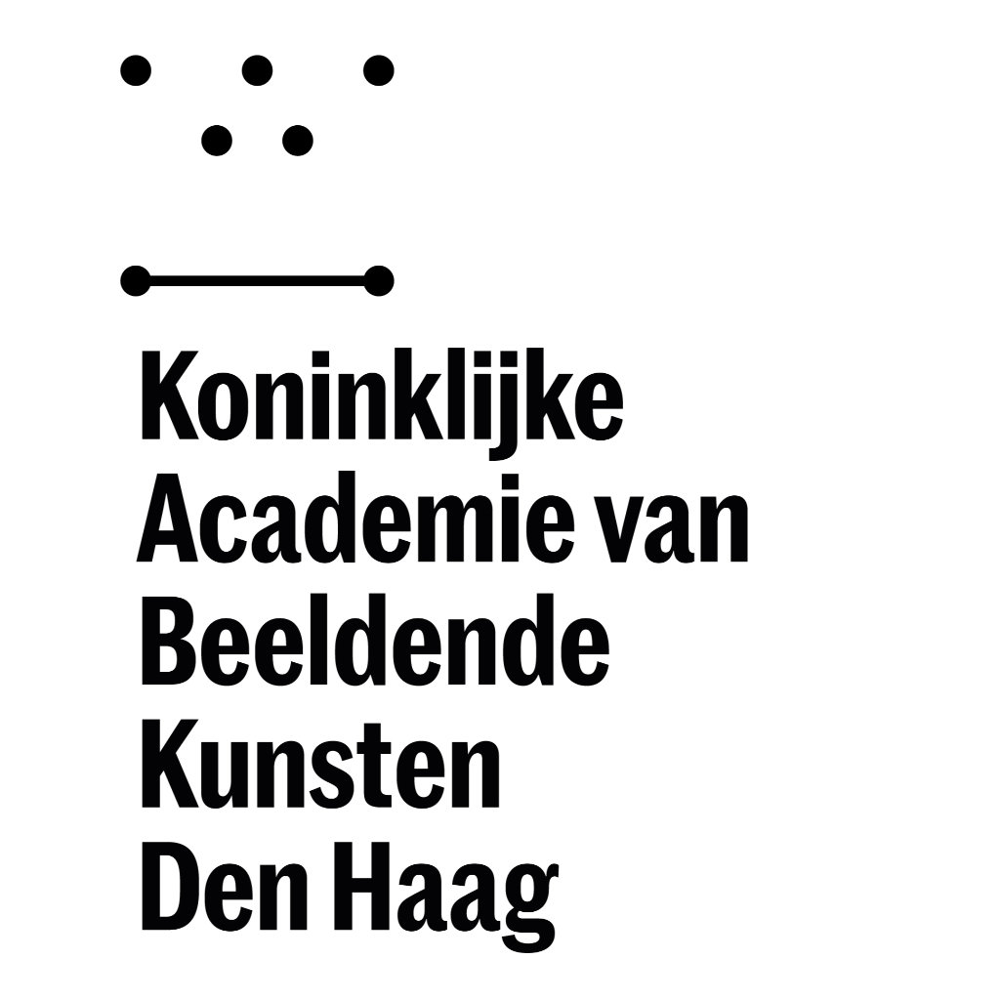
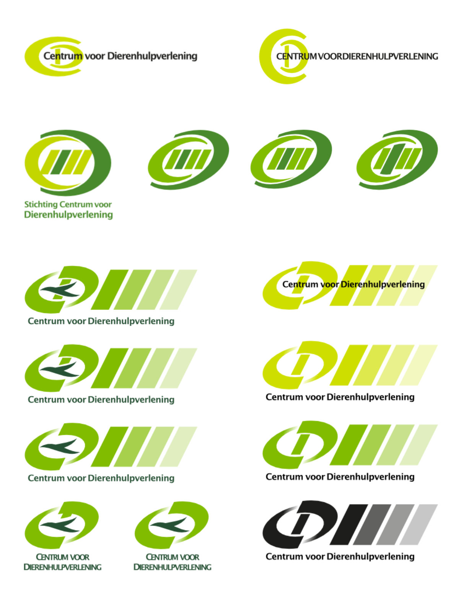
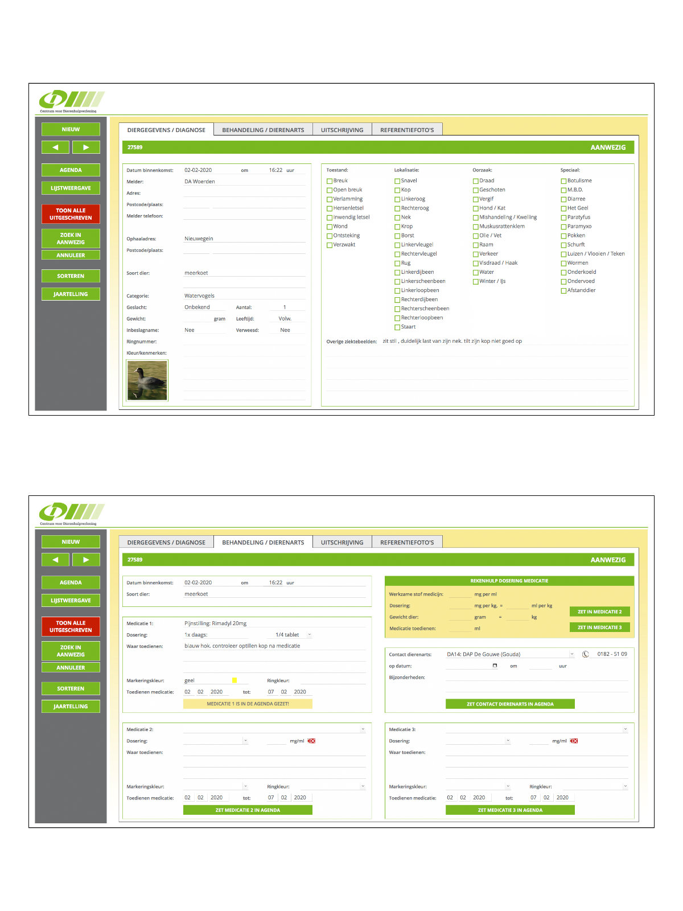
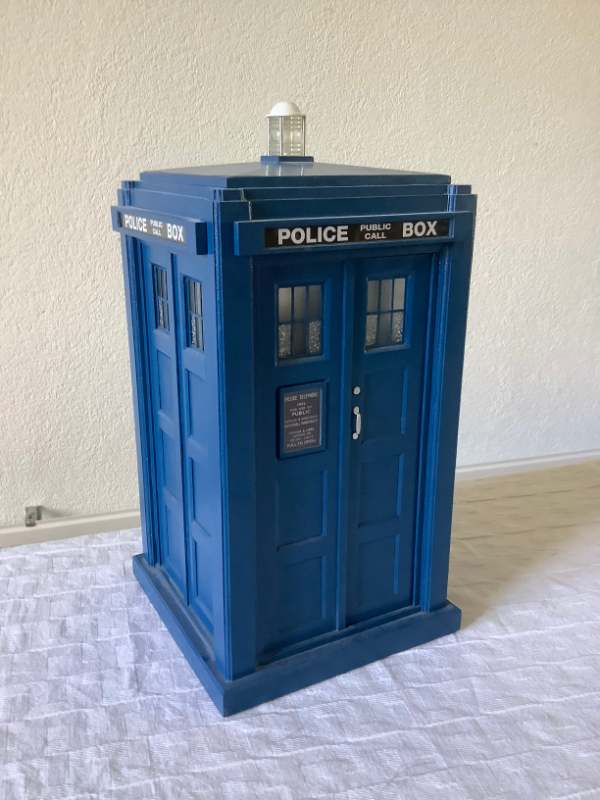

Hallo, mijn naam is Marcel en ik ben een creatieveling. Als kind kon ik uren bezig zijn met tekenen en knutselen. Inspiratie haalde ik uit strips, tijdschriften en tv-shows. Een creatieve opleiding was dan ook de logische keuze. Na eerst een decorateurs-opleiding te hebben gevolgd, ben ik uiteindelijk grafische vormgeving gaan studeren.
Na een mooie carrière als grafisch vormgever is het tijd voor een nieuwe uitdaging. En omdat het creatieve bloed nog steeds kruipt waar het niet gaan kan, heb ik gekozen voor web-/app development. Ik volg daartoe nu een opleiding bij Galileo-academy.
Educated...

Na de MAVO moest ik na gaan denken over een vervolgopleiding; doorstromen naar de HAVO of toch kiezen voor een beroepsopleiding? Ik was altijd wel een “hands-on” type, dus na het doorspitten van folders kwam ik terecht bij het NIMETO in Utrecht; een MBO etaleurs-/decorateursopleiding. Ik ben naar de open dag geweest en was gelijk verkocht. Het 3e jaar was een praktijkjaar. Ik heb in dat jaar bij 2 bedrijven gewerkt: Ter Meulen Rotterdam (warenhuis) op de decorateursafdeling en Arti '70 Leiden (standbouw) op de tekenkamer. Ik heb er veel vaardigheden opgedaan (o.a. technisch tekenen, maquette- en decorbouw en denken in oplossingen).
Na het NIMETO wilde ik graag doorstuderen en heb ik me aangemeld bij de kunstacademie in Den Haag. Ik heb daar grafische vormgeving gestudeerd. De opleiding duurde 5 jaar, waarvan het laatste jaar een praktijkjaar was.
Eén van de vakken die gegeven werden was “ruimtelijke vormgeving”. Ik bleek daar aanleg voor te hebben en omdat de docent tevens directeur van een design-bureau was, heb ik gevraagd of ik daar stage mocht lopen. Dat beviel van beide kanten en al snel kreeg ik een contract aangeboden.
Experienced...
M'n eerste echte baan was als junior ontwerper bij Stadium Design (inmiddels opgeheven); een bedrijf dat gespecialiseerd was in het ontwikkelen van verpakkingen (product-design, graphic-design, marketing). Ik heb daar 12 jaar gewerkt en heb in die tijd in alle disciplines gewerkt; werktekenen, doca-werk, dtp, graphic-design en verpakkingsdesign.
Jammer genoeg heb ik op een gegeven moment gezondheidsproblemen (rsi / burnout) ontwikkeld, waardoor ik in de WAO ben terechtgekomen. Omdat het ook mentaal niet goed ging, ben ik onderzocht bij de GGZ. Uit dat onderzoek bleek dat ik Asperger heb (een autismespectrum conditie); dat verklaarde veel.
Na een lange herstelperiode ben ik vrijwilligerswerk gaan doen bij het plaatselijk asiel. Leuk om te doen en ook weer onder de mensen. Via via ben ik toen bij de dierenambulance terechtgekomen, op de administratie. Omdat het bloed kruipt waar het niet gaan kan, heb ik daar op eigen initiatief o.a. de website en een dierregistratieprogramma gemaakt. Na 11 jaar was de motivatie weg en ben ik daar weggegaan.
Maar ja, thuiszitten is ook niks en na een lange zoektocht naar de juiste hulp, heb ik een jobcoach toegewezen gekregen van de gemeente. Na het in kaart brengen van m'n interessegebieden, werd ik gewezen op een andere creatieve richting: web-/app development. Ik had daar zelf nog helemaal niet aan gedacht, maar het is wel iets waar ik m'n creatieve ei helemaal in kwijt kan. M'n jobcoach is vervolgens voor me op zoek gegaan naar een passend opleidingsinstituut (dit in verband met m'n autisme).
Dat is gelukt en ik volg nu een leer-/werktraject bij Galileo-Academy tot web-/app developer. Een nieuwe uitdaging; ik heb er zin in!


Inquisitive...
Behalve dat ik graag met m'n werk bezig ben, heb ik ook veel hobbies. Tekenen/ schilderen, modelbouw, houtbewerking, grafische vormgeving, webdesign, you name it…
Daarnaast hou ik van lezen, dieren (vooral katten) en nieuwe dingen leren.
En hoewel ik autisme heb, beperk ik me niet tot één ding. Meestal kies ik iets dat me interesseert, ga er dan lange tijd helemaal in op, totdat het volgende “interessants” zich aandient. Lange tijd was dat grafisch werk. Op dit moment is m'n primaire hobby “houtbewerking”.
Ik ben altijd al graag met m'n handen bezig geweest en een paar jaar geleden heb ik een houtdraaibank gekocht om me in het houtdraaien te bekwamen. Voor mij een manier om lekker te ontspannen.

Interested?
Leuk dat je m'n website bezocht hebt! Deze website geeft echter maar een kleine impressie van m'n vaardigheden.
Als je meer wilt weten, of suggesties of opmerkingen hebt, vul dan onderstaand formulier in. Ik hoor graag van je.